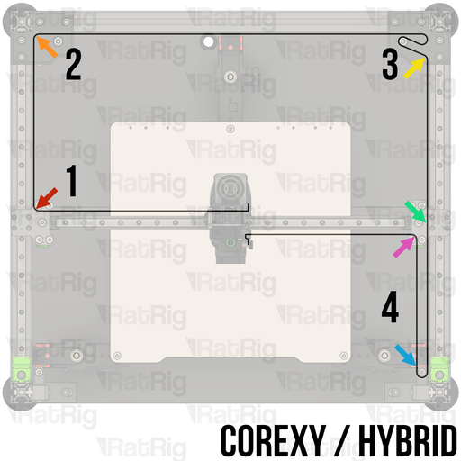
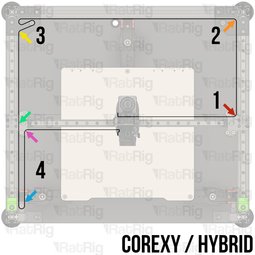
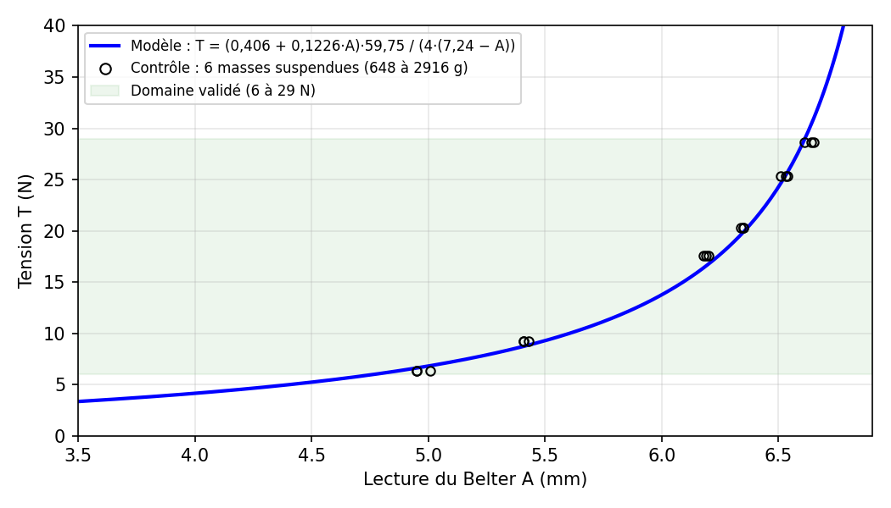
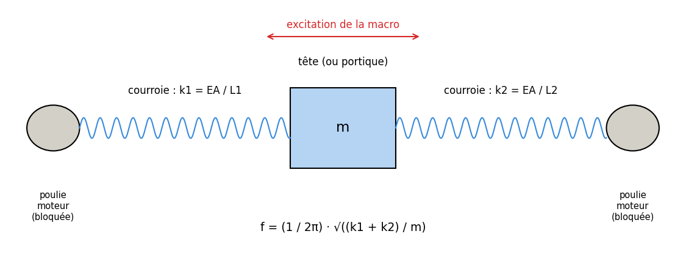

Objet
Ce rapport compare deux façons de contrôler les courroies d'une imprimante Rat Rig V-Core 4.1 hybride : la mesure directe de tension avec le Belter BigTreeTech, et la macro de résonance MEASURE_COREXY_BELT_TENSION de RatOS. Il traite deux configurations de machine : une tête entraînée par deux courroies (mono-tête), et deux têtes ayant chacune sa courroie (IDEX). Il se termine par les avantages et inconvénients de chaque méthode et une procédure de réglage pour chaque configuration.
En bref. Les deux méthodes ne mesurent pas la même chose. Le Belter donne la tension statique d'un brin, en newtons, de façon absolue. La macro mesure la fréquence à laquelle la tête ou le portique oscille sur ses courroies, et sert à comparer deux côtés entre eux. Elles se complètent : le Belter règle le niveau, la macro vérifie le comportement de l'ensemble.
Notations
| Symbole | Signification | Unité |
|---|---|---|
| A | Lecture du Belter (enfoncement de la tige) | mm |
| T | Tension de la courroie | N |
| F | Force de la tige du Belter | N |
| δ | Flèche imposée à la courroie par le Belter | mm |
| L | Entraxe des deux appuis du Belter (59,75 mm) | mm |
| e | Épaisseur de la courroie (1,40 mm) | mm |
| Ls | Longueur libre d'un brin entre deux points fixes | mm |
| μ | Masse linéique de la courroie (0,0126 kg/m pour une GT2 9 mm) | kg/m |
| f | Fréquence (pincement ou résonance selon le contexte) | Hz |
| m | Masse en mouvement pendant la macro (tête ou portique) | kg |
| k | Raideur des courroies dans le sens de leur longueur | N/m |
| EA | Raideur propre de la courroie (fibres de renfort × section) | N |
1. Les configurations étudiées
1.1 Mono-tête : une tête, deux courroies
C'est la CoreXY classique. Deux courroies, dites upper et lower, relient la tête à deux moteurs. Chaque déplacement de la tête combine les deux moteurs : un mouvement en X ou en Y fait tourner les deux, un mouvement en diagonale n'en fait tourner qu'un. Sur la V-Core 4.1 hybride, des courroies Y supplémentaires, entraînées par leurs propres moteurs, tiennent le portique à gauche et à droite.
1.2 IDEX : deux têtes, chacune sa courroie
Deux têtes indépendantes partagent le même portique. Chaque tête a sa propre courroie : T0 (à gauche) utilise la courroie upper, T1 (à droite) la courroie lower. Le portique est déplacé en Y par les courroies CoreXY et hybrides. Les deux têtes sont liées dans les mouvements en Y (elles sont sur le même portique), mais cela n'a aucune influence sur la tension statique de leurs courroies, fixée par chaque tendeur.
La différence entre les deux configurations tient donc à ce que la macro compare, et non à la façon de mesurer la tension au Belter, qui est la même dans les deux cas.
1.3 Chemin des courroies
Les deux courroies CoreXY suivent le même parcours, en miroir gauche/droite. Pour la courroie lower, en partant de la tête : d'un côté, renvoi au bout gauche du portique (1), montée jusqu'au coin arrière gauche (2), traversée jusqu'au coin arrière droit (3) ; de l'autre côté, renvoi au bout droit du portique (joint XY, flèches verte et rose), puis brin 4 qui descend jusqu'au tendeur avant et remonte. La courroie upper fait le même trajet en partant de l'autre côté.




Le brin 4, entre le joint XY et le tendeur avant, est celui que Rat Rig utilise comme référence pour la fréquence de pincement (« XY joiner to front tensioner »). Il est long, droit, accessible, et situé en miroir sur les deux courroies : à droite pour la lower, à gauche pour la upper.
2. Mesure au Belter
2.1 Principe : appui en trois points
Le Belter s'appuie sur le côté lisse de la courroie par deux vis espacées de L = 59,75 mm. Sa tige, poussée par un ressort et munie d'un embout imprimé qui repose sur le sommet des dents, appuie au milieu du brin côté denté. La courroie prend une flèche δ, et la tension T de ses deux brins équilibre la force F de la tige.

Équilibre au point d'appui de la tige, pour une petite flèche (δ ≪ L) :
F = 2 · T · sin θ ≈ 4 · T · δ / L donc T = F · L / (4 · δ)
2.2 Modèle du Belter étalonné
La force de la tige a été étalonnée avec 24 paliers de masse (montée et descente) : F = 0,406 + 0,1226·A, Belter tenu tige horizontale. La flèche se déduit de la lecture de référence, prise sur la pièce de calibration BigTreeTech (5,84 mm), et de l'épaisseur de la courroie :
δ = 5,84 + e − A = 7,24 − A (GT2 9 mm, e = 1,40 mm)
T = (0,406 + 0,1226 · A) · 59,75 / (4 · (7,24 − A)) (T en N, A en mm)
Tous les paramètres sont mesurés, aucun n'est ajusté. Le modèle a été contrôlé sur un brin de courroie de 48 cm chargé par 6 masses de 648 g à 2916 g : il reproduit les tensions à ±6 % près entre 6 et 29 N. La formule empirique fournie par BIQU surestime la tension de +22 à +52 % avec ce Belter et cette courroie.


Sensibilité. Quand la courroie est très tendue, la flèche devient petite et chaque 0,01 mm lu compte : au-delà de A ≈ 6,5 mm, 0,01 mm représente environ 1,5 à 2 % de tension. On fait alors plusieurs lectures.
2.3 Lien avec la fréquence de pincement
Un brin pincé vibre transversalement, comme une corde. Sa fréquence ne dépend que de la tension, de sa longueur libre et de la masse de la courroie :
f = √(T / μ) / (2 · Ls) et inversement T = μ · (2 · Ls · f)²
C'est cette fréquence que vise Rat Rig : 87 Hz pour les courroies CoreXY et 84 Hz pour les courroies hybrides, gauche et droite identiques. Pour une même fréquence, la tension dépend de la longueur du brin : 87 Hz correspondent à 13 N sur un brin de 185 mm, 21 N sur 235 mm et 31 N sur 285 mm. Le Belter, lui, donne la tension directement, quelle que soit la longueur du brin.

2.4 Application aux deux configurations
Mono-tête. On mesure les deux courroies CoreXY (upper et lower) et les courroies Y hybrides gauche et droite, tête toujours au même endroit. On règle chaque courroie à la tension visée, puis on égalise les paires.
IDEX. Même méthode, avec une courroie par tête : courroie upper de T0 et courroie lower de T1, puis courroies Y gauche et droite. Chaque tête doit être à la même position d'une mesure à l'autre, et l'autre tête parquée de la même façon, car la position des têtes change la longueur des brins.
2.5 Où poser le Belter
Tension le long de la courroie. Au repos, les poulies de renvoi tournent librement : la tension se transmet d'un brin à l'autre et reste à peu près la même sur toute la courroie. Deux réserves : si les moteurs sont alimentés, leur poulie est bloquée et les brins de part et d'autre peuvent avoir des tensions un peu différentes ; les frottements des poulies créent aussi de petits écarts. On mesure donc toujours dans le même état (moteurs alimentés ou non) et sur le même brin.
Brin de mesure. On pose le Belter au milieu du brin 4 de chaque courroie : c'est le brin de référence Rat Rig, il laisse la place aux 60 mm d'appui du Belter, et sa position en miroir permet une comparaison directe entre upper et lower. On évite les brins courts ou proches d'une poulie, où la courroie n'est pas libre de part et d'autre des appuis.
Effet du Belter sur la tension. En creusant le brin, le Belter l'allonge légèrement et augmente un peu la tension de toute la boucle pendant la mesure. Sur l'échantillon d'étalonnage, la masse suspendue maintenait la tension constante, si bien que l'effet n'y apparaissait pas. Sur la machine, il reste faible (quelques pour cent au plus, et d'autant plus faible que la courroie est tendue), et il est identique pour les deux courroies : il ne fausse pas la comparaison entre upper et lower.
3. Mesure par la macro de résonance
3.1 Principe : la tête oscille sur ses courroies
La macro fait vibrer la tête dans une direction, en balayant les fréquences (de 10 à 133 Hz par défaut sur la machine étudiée), et un accéléromètre enregistre la réponse. Les moteurs qui ne tournent pas tiennent leur position : leurs poulies se comportent comme des points fixes. La tête, ou le portique, se comporte comme une masse tenue par des ressorts : les portions de courroie qui la relient aux poulies moteur, étirées dans le sens de leur longueur.


f = (1 / 2π) · √(k / m) avec k ≈ EA / L1 + EA / L2
L1 et L2 sont les longueurs de courroie de part et d'autre de la tête, mesurées le long du trajet jusqu'à la poulie moteur, poulies de renvoi et brin 4 compris (§1.3) : la courroie s'étire sur tout ce trajet, puisque les renvois tournent librement. Trois conséquences :
- Ce ne sont pas les vibrations de corde des brins qui forment le pic principal, mais l'oscillation de la masse sur les courroies. Les vibrations de corde (84 à 87 Hz) peuvent apparaître comme de petits pics secondaires dans le balayage.
- La raideur k vient surtout des fibres de la courroie et de la longueur des trajets. La tension la modifie peu, d'où un pic qui bouge peu quand on tend : la macro repère bien une différence entre deux côtés, mais pas le niveau absolu de tension.
- La position de la tête compte, puisqu'elle change L1 et L2. D'où la position imposée par Rat Rig pendant les tests.
3.2 Pourquoi les pics X et Y sont différents
Sur la machine étudiée, le pic est vers 45 Hz en X et vers 112 Hz en Y. En X, seule la tête bouge, tirée par de longs trajets de courroie, donc relativement souples. En Y, tout le portique bouge, mais il est tenu par plusieurs courroies en parallèle, dont les courroies hybrides, avec des trajets plus courts. Le rapport raideur/masse est environ 6 fois plus grand en Y qu'en X (112/45 ≈ 2,5 et 2,5² ≈ 6). C'est normal et ne traduit pas un mauvais réglage. Ces fréquences ne sont pas comparables aux 84 à 87 Hz de pincement, qui décrivent un autre phénomène.
3.3 Mono-tête : ce que compare la macro
Sur une CoreXY mono-tête, les deux courroies ont des trajets identiques quand la tête est au centre en X, grâce à leur chemin en miroir. La mesure de tension de Klipper déplace la tête en diagonale. Dans une diagonale, un seul moteur tourne : l'autre courroie ne change pas de longueur, et c'est surtout la courroie du moteur qui tourne qui encaisse le mouvement. Chaque test isole donc une courroie, avec la même masse (la même tête). Si les deux courroies ont la même tension et la même longueur, elles ont la même raideur, et les pics se superposent. Un décalage désigne directement une différence entre les deux courroies ou un défaut mécanique.
3.4 IDEX : ce que compare la macro
Sur la machine IDEX, la macro produit quatre courbes, regroupées en deux graphes : l'axe X pour T0 et T1, l'axe Y pour T0 et T1. Dans les fichiers de sortie, « left » désigne T0 et « right » désigne T1.
Graphe X. Chaque tête est excitée en X séparément. La masse est celle de la tête, et le ressort est sa propre courroie : upper pour T0, lower pour T1. Le graphe compare donc la courroie upper de T0 à la courroie lower de T1. Sur la machine étudiée, les pics sont à 45 et 46 Hz : les deux courroies X sont équivalentes.

Comme les deux courroies sont en miroir, leurs trajets L1 et L2 ne sont égaux que si les têtes sont placées symétriquement : T0 à la même distance du bord gauche que T1 du bord droit, et non à la même abscisse. Avec les deux têtes à la même position absolue, les longueurs de part et d'autre diffèrent et un léger décalage des pics X peut apparaître sans aucun problème de tension. Une autre condition s'ajoute par rapport au mono-tête : les deux têtes doivent avoir la même masse. Comme f ∝ 1/√m, une tête 10 % plus lourde donne un pic environ 5 % plus bas, même avec des courroies identiques. Avec deux têtes différentes, un décalage en X ne signifie donc pas forcément une mauvaise tension.
Graphe Y. Le portique bouge avec les deux têtes, et les deux accéléromètres voient le même mouvement, mesuré aux deux extrémités du portique. Les pics tombent donc à la même fréquence (environ 112 Hz) : c'est une seule résonance vue deux fois.

L'amplitude, en revanche, est plus forte côté T0 (environ 9,7 contre 6,0 en densité spectrale). Si le portique avançait parfaitement droit, les deux têtes mesureraient la même amplitude. Ici, il pivote légèrement en résonant, et son côté gauche est plus souple. Causes possibles : courroies Y gauches un peu moins tendues, courroie gauche plus longue, ou jeu côté gauche (poulie, tendeur, chariot, fixation). C'est un cas où le Belter permet de trancher : si les tensions gauche et droite sont égales, la cause est mécanique.
4. Avantages et inconvénients
4.1 Belter et macro, l'un par rapport à l'autre
| Critère | Belter | Macro de résonance |
|---|---|---|
| Grandeur mesurée | Tension statique d'un brin (N) | Fréquence d'oscillation de la tête ou du portique (Hz) |
| Type de résultat | Absolu : « 21 N » | Relatif : « pareil que l'autre côté » |
| Précision | ±6 % entre 6 et 29 N (validé par masses) | Bonne pour comparer deux côtés, sans valeur de tension |
| Sensibilité à la tension | Directe | Faible : le pic bouge peu quand on tend |
| Dépendances | Épaisseur de la courroie, lecture de référence | Masse en mouvement, longueur des trajets, position des têtes, fixation de l'accéléromètre |
| Longueur du brin | Sans influence | Influence le pic (L1, L2) |
| Diagnostic | Isole la tension | Voit tout le système : tension, équerrage, jeu, frottements |
| Durée | Quelques secondes par brin | Plusieurs minutes par test |
| Conditions | Aucune : ni bruit, ni électronique | Machine en état de marche, accéléromètre, rien ne doit toucher la machine |
| Suivi dans le temps | Valeurs en N comparables d'une machine à l'autre | Graphes comparables seulement sur la même machine |
| Limites | Étalonné pour une courroie (GT2 9 mm) ; ne voit pas la dynamique | Ne dit pas si les deux côtés sont trop tendus ou trop lâches |
En résumé, le Belter répond à la question « chaque courroie est-elle à la bonne tension ? », et la macro à la question « la machine se comporte-t-elle de façon symétrique ? ». Une machine peut avoir des courbes parfaitement superposées avec deux courroies trop lâches, ou des courroies à la bonne tension avec des courbes décalées à cause d'un défaut mécanique.
4.2 Mono-tête et IDEX, du point de vue de la mesure
| Critère | Mono-tête (1 tête, 2 courroies) | IDEX (2 têtes, 1 courroie chacune) |
|---|---|---|
| Mesure au Belter | Identique : on mesure chaque brin | Identique ; plus de brins à contrôler et positions des deux têtes à fixer |
| Ce que compare la macro | Courroie upper et courroie lower, même tête | X : courroie de T0 et courroie de T1 ; Y : le portique vu par T0 et par T1 |
| Masse en mouvement | Toujours la même | Doit être identique entre T0 et T1, sinon décalage en X |
| Lecture des courbes Y | Comparaison de deux courroies | Même fréquence attendue ; une différence d'amplitude signale une asymétrie gauche/droite |
| Position pendant les tests | Tête au centre en X, toujours au même endroit | Têtes placées symétriquement (même distance à leur bord), même parking à chaque fois |
| Brin mesuré au Belter | Brin 4 de chaque courroie (en miroir) | Brin 4 de la courroie de T0 (upper) et de T1 (lower) |
| Pièges | Mauvaise harmonique au pincement ; tête décentrée en X | Têtes de masses différentes ; têtes à la même abscisse au lieu de positions symétriques |
| Intérêt du Belter | Fixer le niveau de tension | Fixer le niveau, et séparer tension et mécanique quand les courbes Y diffèrent |
5. Procédures recommandées
5.1 Mono-tête
- Placer la tête dans la position de réglage Rat Rig, centrée en X ; choisir un état des moteurs (alimentés ou non) et le garder pour toutes les mesures.
- Belter tige horizontale, au milieu du brin 4 : mesurer la courroie upper (brin 4 gauche), la courroie lower (brin 4 droit) et les courroies Y gauche et droite ; régler chacune à la lecture visée (calculée à partir de la longueur du brin et de 87 ou 84 Hz).
- Contrôler éventuellement au pincement avec une application de mesure de fréquence.
- Lancer la macro et vérifier que les pics se superposent. Si ce n'est pas le cas alors que les tensions sont égales au Belter, chercher une cause mécanique : longueur des courroies, équerrage, jeu, frottement.
5.2 IDEX
- Placer le portique dans la position de réglage Rat Rig ; placer T0 et T1 symétriquement (même distance à leur bord) et garder ce placement à chaque fois ; choisir un état des moteurs et le garder.
- Belter tige horizontale, au milieu du brin 4 : mesurer la courroie de T0 (upper, brin 4 gauche), la courroie de T1 (lower, brin 4 droit) et les courroies Y gauche et droite ; régler et égaliser les paires.
- Lancer la macro pour T0 et T1, en X puis en Y.
- En X : vérifier que les pics de T0 et T1 se superposent. Si les têtes n'ont pas la même masse, tolérer un décalage de l'ordre de la moitié de l'écart de masse relatif.
- En Y : vérifier que la fréquence est la même pour T0 et T1. Si les amplitudes diffèrent nettement, recontrôler au Belter les courroies Y du côté qui bouge le plus, puis la mécanique de ce côté.
6. Limites et points ouverts
- Le code de la macro MEASURE_COREXY_BELT_TENSION de RatOS n'a pas été examiné. L'interprétation des tests (moteurs qui tournent, courroies qui travaillent) repose sur les fichiers de sortie et sur le fonctionnement décrit de la machine.
- Rat Rig ne publie pas les longueurs de brin des machines IDEX : elles sont à mesurer sur chaque machine pour relier la lecture du Belter à la fréquence visée.
- La masse linéique (0,0126 kg/m) provient d'un calculateur de la communauté ; elle reste à vérifier en pesant au moins 1 m de courroie.
- Le modèle du Belter est validé pour une courroie GT2 9 mm de 1,40 mm d'épaisseur, embout en place et tige horizontale. Pour une autre courroie, il faut mesurer l'épaisseur et refaire au moins deux points avec des masses.
- L'augmentation de tension causée par le Belter posé sur la machine n'a pas été mesurée ; elle nécessiterait la raideur EA de la courroie. Elle est identique pour les deux courroies et n'affecte pas leur comparaison.
- L'influence de la tension sur la fréquence de résonance mesurée par la macro n'a pas été quantifiée sur cette machine. Un essai simple consisterait à relancer la macro après avoir modifié une courroie d'une tension connue au Belter.